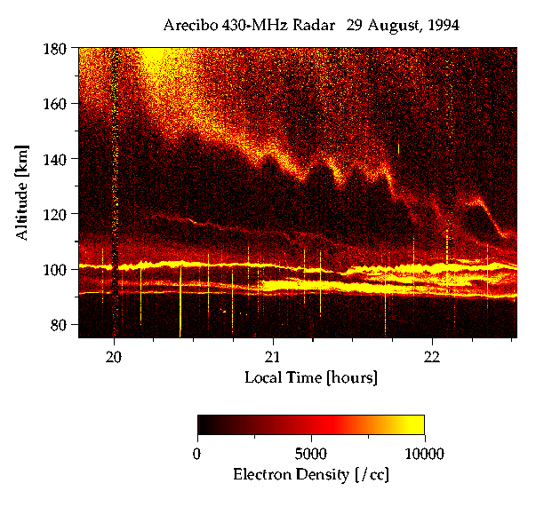

Changes in the relative abundance of helium ions at a height of 500 kilometers (300 miles) compared to the variations in solar activity. (Courtesy of M. Sulzer and S. Gonzáles.)
(Courtesy of NASA.)
The Arecibo Observatory was originally built as the world's premier radar facility to study the upper part of the atmosphere called the ionosphere, where many of the harmful wavelengths of solar and cosmic radiation are filtered out. Since then we have expanded our research to include the entire atmosphere, from the ground into near space. Many new observational techniques have been pioneered here, and we continue to dedicate our efforts to a better understanding of our home planet's complex atmosphere.
[insert "layers of the atmosphere" graphic here]
Changes in the relative abundance of helium ions
at a height of 500 kilometers (300 miles) compared to the
variations in solar activity. (Courtesy of M. Sulzer and S. Gonzáles.)
Disturbances on the sun have a natural cycle of about 11 years, and the climate of the upper atmosphere, or ionosphere, is strongly linked to these changes in solar activity. The Arecibo radar is able to measure ionospheric parameters, including the types and amounts of gases present, their temperatures, and the direction and speed of the winds. For example, the concentration of helium ions in the upper atmosphere varies with the changes in solar radiation. However, the sun is not the only player in this game. The chemical composition of the sparse upper atmosphere is also very sensitive to human activity. For example, greater methane production due to increasing agriculture has resulted in more hydrogen found at high altitudes. The Arecibo Observatory is taking long-term measurements of this and other signs of changes in our atmospheric climate.
The changes in the relative abundance of helium
ions over the course of a single night. (Courtesy of S. Gonzáles
and M. Sulzer.)
The ionosphere not only has a climate, it also has day-to-day weather. Sometimes the weather up there ("space weather") can be dramatic, such as when a solar flare triggers a geomagnetic storm, which in turn can adversely affect communication and navigation satellites and electric power grids. Scientists are developing mathematical models to provide the space weather forecasts needed to protect these systems, and measurements made at Arecibo are an essential ingredient for testing such models. Even if perfected, forecasting models will always be dependent on having high quality measurements to provide a starting point for their predictions.
Each day many tons of meteoroids are
vaporized while entering the earth's atmosphere. The meteors,
their trails, and the layers of particles they leave behind can
all be observed with the arecibo radar. Another fascinating
phenomenon is buoyancy waves, which travel throughout the
atmosphere, just as ocean waves constantly roll across the sea.

A meteor shooting down the radar beam, with a
longer-lasting tail produced by the interaction of the meteor
with the ionosphere. (Courtesy of Q. Zhou.)
In addition to receiving radiation and particles from the sun, the Earth is also bombarded by over 100 tons of meteoroids each day. Most of them burn up in the lower ionosphere and leave behind vaporized rock and metal. The larger meteoroids emit light as they vaporize, which we see at night as sudden bright streaks in the sky. Radars can detect meteors that are not visible to the eye, and the Arecibo radar is the world's most sensitive one for this purpose. Over time the meteoric smoke condenses into dust, and the heavier particles sink through the atmosphere and provide the seeds for cloud formation. For example, polar stratospheric clouds, which are a key ingredient in the formation of the ozone hole, grow around these meteoric dust grains.

A radar "map" of the ionosphere at night.
The bright vertical streaks are meteors. (Courtesy of J. Mathews.)
An incredible variety of phenomena can be observed with the Arecibo radar in the nighttime ionosphere. Vaporizing meteoroids leave behind thin horizontal layers of extraterrestrial metallic ions at around 100 kilometers (60 miles) altitude. Atmospheric buoyancy waves traveling all the way up from near the ground then create the up-and-down wiggles that are seen in these layers. These buoyancy waves are analogous to ocean waves and occur throughout the atmosphere. Such waves are generated by, among other things, thunderstorms and winds blowing up and down across mountains. If you look at the sky from the ground or from an airplane, you can sometimes see regularly spaced rows of clouds created by these same buoyancy waves.
[insert "waves in clouds" photo here]
(Photo by G. Giles.)
The airglow layer over Arecibo recorded with a
wide-angle infrared camera showing two buoyancy waves crossing
each other. (Courtesy of M. Taylor and F. García.)
In addition to the radar systems, the Arecibo Observatory also has optical instruments to study the atmosphere. At night, if your eyes were sensitive enough you would see a faint glow in the sky. This luminescence is called airglow, and it is the result of chemical reactions that occur at an altitude of about 90 kilometers (55 miles). Because the airglow brightness is affected by atmospheric motions, we can use it to get a picture of what is happening at that height. One can often see buoyancy waves rippling through the airglow layer like waves on a pond surface. These waves travel throughout the atmosphere and help to move energy and momentum from one place to the other. Because of this, our understanding of buoyancy waves is extremely important to our understanding of the atmosphere as a whole.
Some clouds are too thin to be seen
with the naked eye. A lidar can detect such clouds. It operates
like a radar but uses visible or infrared waves in place of radio
waves, and can observe things that a radar can not. Another
important instrument at Arecibo is the HF (high frequency)
facility, which is an upward-pointing shortwave radio transmitter
used to study plasma waves and turbulence in the ionosphere.
(Photo by P. Castleberg.)
Arecibo scientists also study the atmosphere using optical radars known as lidars. A lidar works almost exactly like a radar--the difference is that pulses of light instead of radio pulses are used. This difference can be seen in their names: RADAR stands for RAdio Detection And Ranging, while LIDAR stands for LIght Detection And Ranging. Lidars can measure atmospheric density, temperature, winds, as well as dust and pollutants. The extraterrestrial metal atoms deposited in the upper atmosphere by meteors can also be observed by the Arecibo lidars.

A map of atmospheric density seen by lidar
overlaid with horizontal wind measurements made by radar. The
thick, bright layers at the left of the plot are clouds that
resulted from a thunderstorm. The thin layer in the middle of the
plot is due to clouds which cannot be seen by the naked eye. (Courtesy
of P. Castleberg and J. Cho.)
The lidar provides crucial information that the radar cannot obtain. For example, high-altitude clouds too thin to be seen by the naked eye can be detected using a lidar. Such "invisible" clouds are thought to play an important role in exchanging water between the troposphere and the stratosphere, and the sensitivity of the lidar measurements helps us to learn much more about them. The wind information provided simultaneously by the radar gives us the background motions under which this exchange occurs.
The scientific name for the gas of ions and electrons that makes up the ionosphere is "plasma." Most people have heard of the three states of matter--solid, liquid, and gas--but few know about plasma, which can behave in such startlingly different ways that physicists call it the fourth state. Most of the universe, including the solar wind, stars, and galaxies, is composed of plasma, so it is of great interest to scientists. Plasma can be found on Earth in special laboratory chambers, inside neon signs, and can also be briefly created by lightning bolts and fire.
An experiment using the Arecibo HF facility that
produced tubes of decreased electron density along the Earth's
magnetic field. The rocket data shows that it flew through two of
these tubes. (Courtesy of M. Kelley, T. Arce, and M. Sulzer.)
The ionosphere provides us with a natural plasma laboratory in the sky. This "space laboratory" can be used for studying plasma phenomena in ways that cannot be duplicated in laboratories located on Earth. For example, using Arecibo's powerful HF (high frequency) radiowave transmitter we can produce short-lived plasma waves and turbulence in the ionosphere, which can then be observed with radars, optical instruments, and instruments flown on rockets.